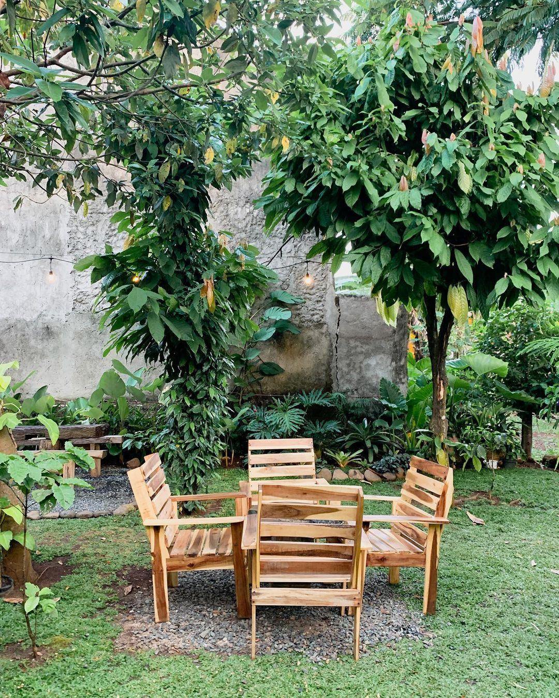

Rumah Kebun 99 dahulunya yaitu kebun yang di tanami tumbuhan cokelat dan kopi. Tapi, sang pemilik memutar kepala mencari pandangan baru supaya dapat menghasilkan cuan. Walhasil di bangunlah kedai kopi dengan tema unik dan berbeda dari kedai kopi lainnya. Cafe atau kedai kopi ini menjadi alternatif daerah ngopi paling cozy bagi buah hati-si kecil muda, konsep ruang terbuka hijau begitu menyegarkan jiwa dan raga. Kekuatan tarik dari kedai kopi yang satu ini ialah tempatnya yang adem, wajar saja karena Rumah Kebun 99 di hiasi beraneka pohon-pohon yang menciptakan udara bersih dan juga segar. Selain cozy, terbukti Rumah Kebun 99 menghadirkan beraneka alternatif menu dengan harga gak bikin kantong kering lho. Tersedia opsi makanan mulai dari makanan berat hingga makanan ringan bisa kau pesan. Menu makanan yang dapat kamu nikmati di tempat ini di antaranya nasi bakar ayam, dimsum, chicken salted egg, beef toast, tempe mendoan, pangsit goreng, dan lain-lain. Kau perlu menyiapkan uang mulai dari Rp8.000 sampai dengan Rp18.000 untuk mengorder menu makanan di tempat ini
Bagi para pecinta kopi sejati telah pasti bakal pesan minuman kopi. Rumah Kebun 99 sudah menyiapkan beberapa menu minuman kopi di antaranya americano, es kopi susu, espresso, V60, turkies, dan vietnam drip. Sekiranya gak terlalu menyenangi dengan minuman berkafein gak perlu kebingungan sebab kedai kopi ini telah menyiapkan minuman non kopi seperti red velvet, chacoal, cookies & cream, taro, teh manis, teh telang, dan lemon tea. Untuk daftar menu minuman tertulis dari harga Rp5.000 sampai dengan Rp18.000 saja. Gimana? Murah banget ya! Dengan harga menu hal yang demikian kau sudah bisa nongki cantik bareng kerabat, keluarga, bahkan kekasih tercinta.